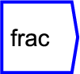
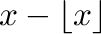
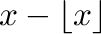

Next: not
Up: Functions/Unary Operators
Previous: floor
Contents

Fractional part of  , ie .
, ie .
The operator can be placed on the canvas in two ways:
- From the Functions (``function'') toolbar; or
- By typing the letters ``frac'' on the canvas and then pressing the
Enter key.